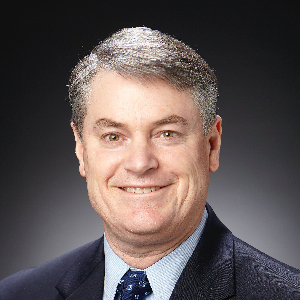
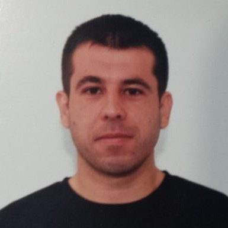

co-located with IEEE CNS'25
September 8-11 // Avignon, France
September 8-11 // Avignon, France
| Home | Registration | Program | Directions | Flyer | Submission |
Critical Infrastructure (CI) stands out as prime targets for global attackers due to their critical role as the essential part of any nation's infrastructure. The workshop on "Secure Industrial Control Systems and Industrial-IoT (SICSI)" invites contributions in the realm of enhancing security and resilience in critical infrastructure, industrial control systems (ICS), supervisory control and data acquisition (SCADA) systems and operational technology (OT).
We welcome papers exploring innovative approaches for bolstering the security and resiliency of CI, ICS, SCADA and OT environments. Topics of interest include the application of artificial intelligence techniques and machine learning methods to fortify CI, ICS, SCADA and OT defenses against emerging threats, as well as the development of autonomous, self-managing security systems tailored to the unique challenges of industrial environments. We also encourage submissions that delve into the security and resilience of interconnected systems, spanning from traditional ICS and SCADA to operational technology and industrial internet of things (IIoT) ecosystems. Additionally, we seek contributions addressing autonomic security management approaches specifically designed for ICS/SCADA infrastructures.
Participants are encouraged to submit their work on novel approaches to security tailored specifically for the unique challenges posed by CI, ICS, SCADA and OT infrastructures. Through this workshop, we aim to foster discussions and exchange of ideas among researchers and practitioners aiming to advance the state-of-the-art in securing critical industrial systems.
In this workshop, we invite the academic and industrial research community in CI, ICS, SCADA and OT security to submit works related to the field and revolving around the following topic areas:
The list above is by no means exhaustive, as the aim is to foster the debate around all aspects of security (offensive/defensive), resiliency and privacy methods for critical infrastructure.
Papers should be formatted according to the IEEE CSN'25 formatting guidelines.
Be mindful of the following dates:
Note: all deadlines are AoE (Anywhere on Earth).
|  |  | ||
| Dr. Christopher Rouff is a Researcher at JHU APL, and adjunct faculty member at Johns Hopkins University Whiting School of Engineering, Computer Science Department. | Dr. Lanier Watkins is chair of the Johns Hopkins Engineering for Professionals Master's in Computer Science and Cybersecurity programs, develops innovative algorithms and frameworks to address the continuously changing needs of defending critical infrastructure networks and systems. | Joe Maurio, PE is the Chief Scientist for the Cyber-Physical Systems Branch in the Asymmetric Operations Sector of the Johns Hopkins University (JHU) Applied Physics Lab (APL). He leads various research portfolios developing capabilities and technologies to make our critical infrastructure systems more secure and more resilient. | Ali Tekeoglu is a Cyber/AI Research Scientist at Leidos Innovations Center, and adjunct faculty member at Johns Hopkins University Whiting School of Engineering, Computer Science Department. |